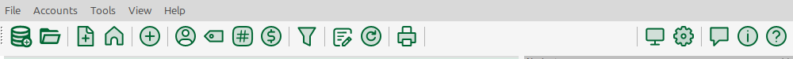
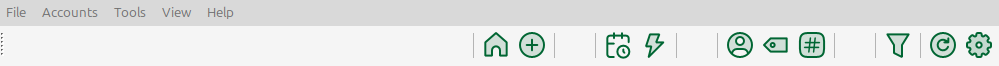
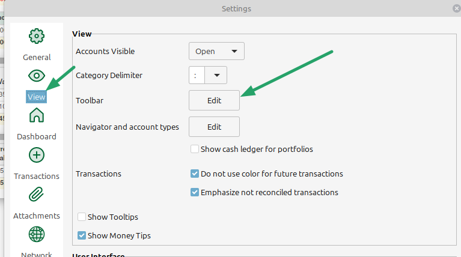
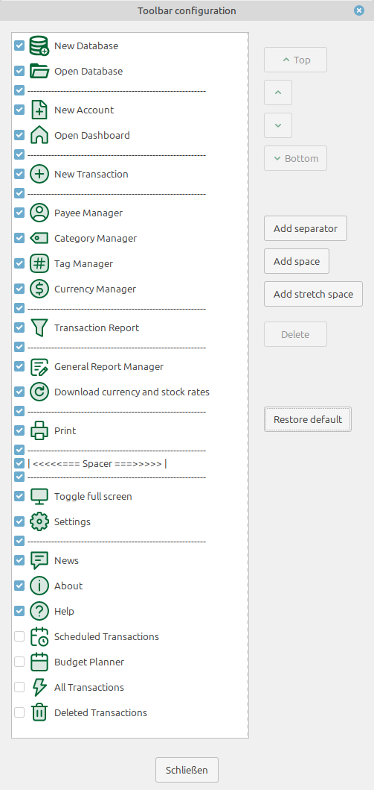
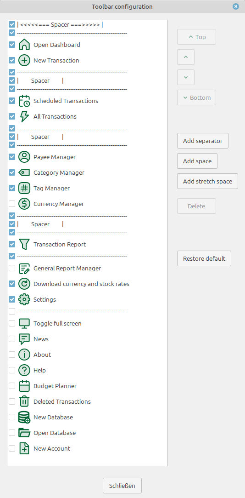

adding separators and space between the toolbar buttons
Example: Default toolbar:

customized toolbar:

The configuration dialog
Open
The toolbar configuration dialog can either be opened in the settings menu Tools → Settings…:

or with a right mouse click on the toolbar.
Dialog window
Toolbar edit dialog view with default configuration:

vs.
view after customization:

Changing the button sequence
To change the toolbar button sequence, simply select a button and move it with the help of the Top/↑/↓/Bottom buttons to the desired position.
Hide a toolbar button
Toolbar buttons can be hidden in the toolbar panel by de-selecting them. E.g. An unneeded help button
Adding or deleting structural elements
Three different structure elements can be added or removed by using the corresponding buttons:
Separator: A vertical line to optically separate butoons from each other.
Space: A fixed space (size is equal the tool bar icon size)
Stretch space: A variable space, which takes all the remaining space in the tool bar. If more than one is added, the remaining space is equally divided between the stretch spaces.
Undo customizations
With the Restore defaults button the default toolbar configuration is restored.
Notes
The toolbar configuration is stored in the MMEX ini file and used for all databases openend with the program instance.